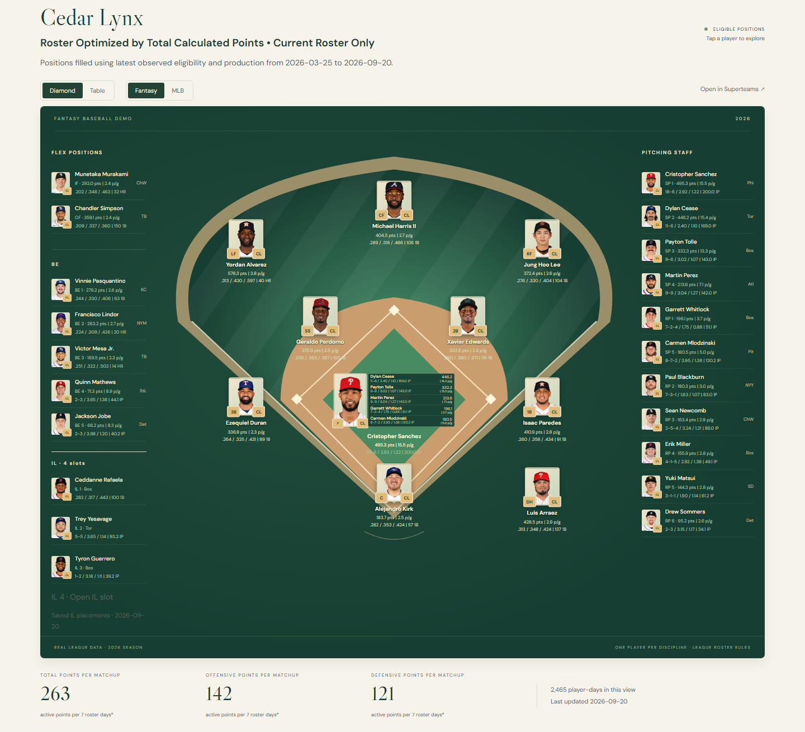

Using the dashboard
A guide to poking around your league’s history.
Start with a team, a period, or a question about who actually produced. This guide explains the controls that are there now and the plans for pages still taking shape.
The dashboard and the Google Sheets workbook are two presentations of the same underlying data. The dashboard does not read the workbook. The downloadable project builds the Sheets almanac; the dashboard is a separate web layer.
Guide reviewed September 25, 2026 · v2.2 preview · examples use the public demo
Open the demo dashboard →Available now
Home
The Home page opens with a league Superteam: a computed lineup assembled from the selected period’s production. Use Period to switch between the displayed completed matchup, the season, and All-Time. The date label tells you what the published data covers.
Explore Superteams opens the lineup builder with that view’s selections. This is where you can change clubs, dates, production type, or the stat used to choose the lineup.
The standings summary is a starting point; All standings views opens the Advanced Standings page, which is still in development. Farther down, Explore The Clubs provides links to each club’s page.
Current views available · more tabs planned
Team pages
Choose a club from Home or Team Pages. Current Season and Club History are working views worth exploring now. These views are here to stay. Club Records, Transaction History, and Trophy Case are still to come.
Current Season
The opening view uses the latest saved roster, the current season’s captured production, Total production, Calculated Points, and current eligibility. “Current” means the latest saved observation, not a live call to ESPN.
Three choices are independent: who is in the player pool, which performances count, and where players may be placed. With Current Roster Only checked, moving the performance dates backward does not recreate an old roster or undo a player’s acquisition. To explore previous seasons, use Club History.
For example, open Cedar Lynx in the demo. All MLB Games includes captured production from before a current player joined the club; Cedar Lynx Tenure restricts it to the time that player belonged to the club. The roster selection itself is a separate choice.
Club History
Club History starts with the club’s all-time leading scorers, using historical Active club production. It includes former players and allows all captured seasons. Use it when the question is what someone contributed to this franchise, rather than what today’s roster has produced elsewhere.
Diamond, Table, and All Players
- Diamond / Table changes the presentation of the same selected lineup and slots. It does not choose a different team.
- The slot-shaped table separates starting hitters, starting pitchers, and reserves. Repeated slots remain separate, and empty slots remain visible. “Active” above the starters names that group; it does not override the Production Type selector.
- All Players is the separate sortable player-statistics table below the lineup. Use its column headings, position filter, and page controls to inspect the larger pool. Its All / Hitting / Pitching controls change the displayed stat groups.
- Fantasy / MLB changes stat columns, not player selection. In All Players, the All view stays a points summary. Click a player to open the available player detail.
On Current Season with Current Roster Only checked, saved fantasy-IL occupants stay in the configured IL slots. This uses saved placements; it does not infer medical eligibility. Changing the performance dates does not move those saved occupants.


Available now
Superteams
This is the lineup builder for one club, several clubs, or the whole captured league. Choose a Club selection and a Period, then use Production Type and Stat to decide what the lineup should maximize.
Calculated Points is one option; a stat such as Triples builds a different lineup around that stat. Positions controls which positional evidence is used. The resulting lineup still follows the league’s configured slots and restrictions.
Split Production by Team separates a player’s included production by fantasy club. With it off, that production is combined. Neither choice changes the selected dates or production type.
The lineup, player detail, and All Players table work as described above. Read the lineup explanation and date labels after changing filters. The Filter Guide explains the scope choices next to the controls.
Filters and the Filter Guide
Open the collapsible Filter Guide on Team Pages or Superteams for help beside the controls. These filters change the view; they do not edit the underlying data.
- Period / Custom Date Range
- Period selects the league’s preset periods. An enabled Custom Date Range overrides those selections with one continuous timespan. Current Season stays within the current season’s captured dates; Club History allows all captured seasons. Superteams supports a matchup, season, multiple matchups, or All-Time.
- Current Roster Only
- On a Team Page, checked means the latest saved roster, even for dates before acquisition. Unchecked includes players who belonged to the club during the selected dates, including departed players.
- Include Stats From
- All MLB Games includes captured production regardless of fantasy ownership, including free-agent days. A club’s Tenure includes only production while rostered by that club. Superteams also offers the fantasy league’s owned production, excluding free-agent days, and Selected Clubs Tenure for the selected clubs. With Active selected, All MLB Games means active for any fantasy club; club Tenure means active for that club.
- Production Type
- Choose the Active, Total, or current Wasted view within the production scope above. Read Scoring views for the shared definitions and the dashboard’s current Wasted limitation. Changing production type does not change the saved roster.
- Stat
- Choose the measure the lineup maximizes. It changes the optimized lineup, not the league’s underlying scoring rules.
- Positions
- Eligible (Retroactive) applies the latest observed eligibility to the selected dates. Eligible (At the Time) uses production earned while eligible at each position. Slotted uses actual fantasy lineup positions. These can produce different assignments.
- MLB Status
- This control is disabled in the current public demo because its snapshot does not include verified current organization observations. All players remain included. The displayed MLB labels come from dated game history; a missing label does not mean a player is retired.
Scoring views and column help
The shared definitions live in The points lenses: Platform versus Calculated Points, Active versus Inactive, and the workbook’s lineup conventions. Use that reference rather than treating the browser as a second scoring system. The Stat selector offers Calculated Points and Platform Points explicitly.
PPG and +/-
ppg divides calculated points by games under the same date, ownership, and production filters. Hitting and pitching use their respective game counts. No games means the rate is unavailable.
+/- is Active Points minus (full-window Points ÷ full-window Games × Active Games). Its baseline spans every captured club and free-agent day in the selected dates. It retains its Active comparison when you change Active / Total / Wasted, and uses calculated points unless Platform Points is selected. Zero baseline games makes the measure unavailable.
Games and roster days are different measures. Use the column help and the caption on the particular table or summary instead of treating every “per” figure as the same denominator.
For position eligibility, lineup-slot validity, and two-way players, see Eligibility, lineups, and two-way players. Switching Fantasy / MLB only changes displayed columns. A two-way reserve can appear in both statistical groups while occupying one roster slot.
In development
Advanced Standings
The plan is to bring six related views together: Standings, Rank History & Finishes, Positions, Acquisition Channel, MLB Affinities, and Rivalries. Some are already visible in the preview; their layout and controls are still being worked through.
That includes comparing totals with the applicable per-matchup views, following season finishes, seeing production by position or acquisition channel, and exploring which MLB clubs and fantasy opponents feature in a league’s history. Read each view’s own labels: the existing tables do not all use the same denominator.
Expected winning percentage
The all-play comparison uses completed regular-season platform scores. In each matchup period, a team’s score is compared with every other team’s score, excluding itself. Expected wins and losses account for the number of opponents in that period; ties stay separate. Playoffs and open periods are excluded.
This describes the competition already captured in the data. It is not a prediction of future results. The intended displays are Expected W-L in Totals and Expected W% in Per Matchup.
In development
Record Book
The plan is a browsable home for the existing records, preserving their qualifications, ties, and incomplete or estimated labels. Navigation is still being designed around the record’s timespan, team or player scope, and statistical category. Specific controls will be documented here as they settle.
In development
Trades
The plan brings the trading block and completed trade record into the browser. Any published trade view needs an “as of” date: the dashboard uses saved data, not the workbook’s live platform call. Its browsing layout is still taking shape.
In development
Draft Recap
The plan covers best-value picks, biggest busts, season draft boards, and historical draft comparisons. The browser presentation is still in development; this guide will explain its specific controls once those are settled.
Planned tab
Club Records
A place for a club’s records; the Team Page tab is currently a placeholder.
Planned tab
Transaction History
A place for a club’s transaction history; the Team Page tab is currently a placeholder.
Planned tab
Trophy Case
A place for a club’s honors; the Team Page tab is currently a placeholder.
Reference page · still developing
Rules & Payouts
The navigation includes a home for league rules and payout information. The design keeps extracted platform settings distinct from custom league policies; payout links can remain placeholders until supplied. Treat a placeholder as unfinished documentation, not a statement of your league’s rules.
Coverage and freshness
The demo is a published snapshot. Changing a filter queries the captured data in your browser; it does not fetch a new roster or update the website from ESPN. A local data refresh does not change the website until a new snapshot is published.
Read the production data through date separately from roster and eligibility observation dates. Different sections can have different cutoffs. A workbook, a standings table, and a lineup view should not be assumed to share one update date.
All-Time means all captured seasons in the selected view. All MLB Games means the captured production available to that view, not a guarantee of complete MLB career coverage.
Stat sources and fidelity explains the reconstruction and its limits. That reference spans multiple workbook histories; its older eras should not be read as a list of seasons available in this demo.
Known limitations
- The first load can take several seconds while the browser engine and data arrive. Performance work is planned for v2.3.
- The Wasted view has the narrower implementation described above.
- Current MLB Status filtering is unavailable in the demo snapshot.
- Advanced Standings, Record Book, Trades, and Draft Recap remain in development. The three planned club tabs do not yet have their promised content.
- Missing data and unavailable rates should not be treated as observed zero production. Some table cells use a dash for zero or unavailable values; consult their help text.
Shared definitions and next steps
The browser uses the same underlying definitions as the workbook, subject to the dashboard limitations called out in this guide. The workbook guides remain the reference:
To build your own Sheets almanac, start with the quickstart guide. For the project overview, examples, and download, visit the project website.